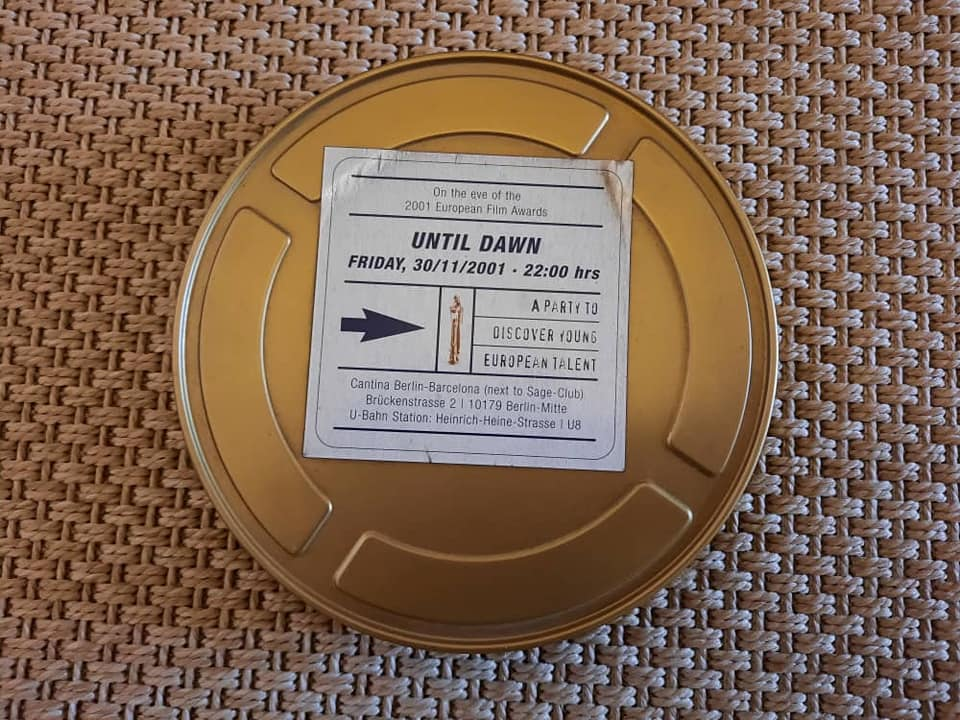

{% extends 'main/base.html' %}
{% block title %}
about
{% endblock %}
{% block content %}

Каталог
"Этот необычно оформленный каталог - свидетельство того, что "Маймыл" был номинантом на премию имени Рейнера Фассбиндера "Открытие года", Европейской Академии Кино. И каждый раз, когда вижу эту коробку из-под плёнки, я вспоминаю случай, за который до сих пор мне стыдно.
На "Маймыле" перезапись звука (сведение шумов и музыки) производилась в Брюсселе. После завершения монтажа меня и Айчурек, как ответственную за благостное состояние моей души, командировали в Бельгию. Это было своего рода бонусное вознаграждение, и родюсеры оплатили наши перелёты бизнес классом авиалинии KLM. Вылетели из Алматы в Амстердам, а до Брюсселя пришлось лететь на старом самолёте типа нашего "кукурузника", если честно, думал, не долетим, одно утешало: Айчурек рядом...
Чедомир и Умберто нас ожидали в аэропорту, а когда Чедомир увидел наш багаж, забеспокоился: "Весь багаж?.. А где коробки с плёнкой?" И у меня ёкнуло сердце, будто бы самолёт рухнул на землю. Чедомир стал орать на Умберто, который пытался его успокоить и стали выяснять отношения на громком итальянском (они говорят на сербском, итальянском, французском, английском и с нами на русском).
Звук должен был быть в системе DOLBY и специально в Бишкек из Брюсселя прилетал звукооператор, вроде его звали Доминик, для подготовки аудио материала к перезаписи. Смонтированный фильм был на кассетах BETACAM SP и все работы, связанные со звуком, мы делали на видео с тайм кодами. И Чедомир, и Доминик говорили, что эра плёнки заканчивается и производство кино полностью будет на видео. Видимо, у меня в голове отложилось понимание, что для сведения шумов и музыки теперь не нужен смонтированный позитив (окончательный монтаж изображения на позитивной кинопленке).
Остывшие Чедомир и Умберто вернулись к нам, а мы так и стояли в зале ожидания, словно никому не нужные. Они подошли и стали спрашивать, есть ли у кого-нибудь в группе шенгенская виза, разумеется, нет, а экспресс почтой доставка груза заняла бы 5-7 дней. И тогда Чедомир говорит: "Актан, тебе придётся лететь обратно и тем же рейсом, с позитивом, ты должен вернуться..." Я был готов на все, чтобы хоть как-то сгладить свою вину. Мне, на самом деле, было ужасно стыдно. А в глазах Айчурек, наверное, выглядел, как "байкуш режиссёр". И я вылетел в Алматы, куда привезли два яуфа с девятью коробками смонтированного позитива...
Как говорит Чедомир, в кино уйма проблем, порой кажется, совсем нерешаемые, но, в конечном итоге, все хорошо заканчивается.
"Особый взгляд" в Каннах и номинациия на премию "Открытие года", в результате чего я стал членом Европейской Академии Кино".
{% endblock %}